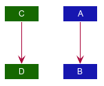

Introduction to PlantUML
PlantUML is a tool used in this project to create UML diagrams. For more information about the basics of PlantUML, head over to its official website.
Set up PlantUML
Installing Graphviz
Graphviz is a dependency that PlantUML requires to generate more advanced diagrams. Head over to the downloads page on the official Graphviz website and follow instructions to install Graphviz.
Installing the PlantUML integration plugin for IntelliJ IDEA
Go to Settings > Plugins > Marketplace and install the plugin PlantUML integration.
Then go to Settings > Other Settings > PlantUML or search for PlantUML.
Configure the path to the dot executable.
This executable can be found in the /bin directory where you installed GraphViz.

Create/Edit PlantUML diagrams
After installing the PlantUML integration plugin, simply create or open any .puml file to start editing it.

DeleteSequenceDiagram.pumlAny changes you make in editor pane on the left will be reflected in the preview pane on the right. However, do take note that these changes will not be reflected in the developers guide until you export the diagram.
Export PlantUML diagrams
The PlantUML integration plugin allows you to export individual diagrams to a location of your choosing.
Click the Save Current Diagram Only button and choose the location to export the image file.
You will have to git add any new diagrams generated!
|
Common tasks
Applying consistent formatting to PlantUML diagrams
It is highly recommended to consistently color your UML diagrams as an visual aid. You can achieve this by creating a dictionary of colors and import it like CSS.
For example, you can create a Style.puml with the contents:
...
!define LOGIC_COLOR #3333C4
!define LOGIC_COLOR_T1 #7777DB
!define LOGIC_COLOR_T2 #5252CE
!define LOGIC_COLOR_T3 #1616B0
!define LOGIC_COLOR_T4 #101086
...Then you can use it in another PlantUML file like this:
!include Style.puml
box Logic LOGIC_COLOR_T2
participant ":LogicManager" as LogicManager LOGIC_COLOR
participant ":AddressBookParser" as AddressBookParser LOGIC_COLOR
participant ":UndoCommand" as UndoCommand LOGIC_COLOR
end boxYou can fine-tune the formatting of PlantUML diagrams with the skinparam command.
For example, skinparam backgroundColor transparent turns the background of the diagram transparent.
For a comprehensive list of skinparams head over to the unofficial PlantUML skinparam documentation.
Repositioning elements in PlantUML diagrams
While PlantUML’s automatic layout engine usually produces satisfactory results, at times the result can be less than ideal, especially on larger diagrams. Here is an example where the default layout generated by PlantUML has a lot of overlapping lines that are hard to decipher:

| In most cases, you should consider decomposing the diagram into smaller ones or focusing on a more specific portion of the diagram. |
Here are some of the techniques we used in this project to obtain a more palatable diagram.
Link lengths
By default, a short link (->) points to right and a long link (-->)
points downwards. you can extend any link to make it longer (--->

Link directions
Clever usage of arrow directions will resolve most layout issues. For example, the table below shows how the way in which you specify arrows can results in drastically different layouts for the same diagram.
| Source | Result |
|---|---|
|

|
|

|
|

|
Reordering definitions
As a general rule of thumb, the layout engine will attempt to order objects in the order in which they are defined. If there is no formal definition, the objects is taken to be declared upon its first usage.
| Source | Result |
|---|---|
|

|
|

|
|

|
| Explicitly define all symbols to avoid any potential layout mishaps. |